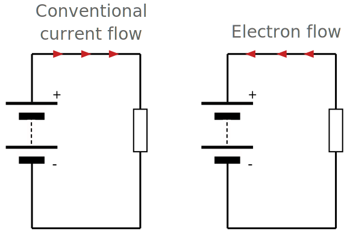
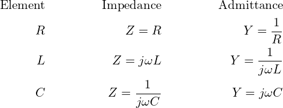

Circuit Fundamentals
This section will go over the various basics of electronics and associated fields
What is a Circuit?
Electronic Circuit - Any device that performs characterisitcs associated with the movement of electrons
Ex: Static Shocks, Home Wiring, Light up Toys, etc.
A circuit can be generally considered to have 3 parts.
- Electron Source - This "powers" the circuit
- Intermediate Devices - Filters, IC's, anything that isn't in any other category
- Load - The primary recipiant of the Electron Source. Usually an IC or a passive load.
pages: - Home: 'index.md' - About: 'about.md'
Definition of Current
Conventional Current - Direction of curent flow used for analysis
Electron Flow - Direction of electron flow (opposite of Conventional Current)
Trivia: This is because Ben Franklin took a coin flip to decide the direction of current and was wrong. Oh well.

Current - The flow of electrons through a conductor
Current flow induces the following
- Heat - More thermal disipation at higher currents and resistances. The amount of energy disipated as heat is defined as H. Where H is the amount of heat disipated in Joules, I in Amps, R in Ohms, and t is time.
- EMF Field - A conductor will build up a magnetic field, effictivley acting like an inductor.
Definition of a Volt
Through Ohm's Law. We know that...
Note, Wb is webers per second (magnetic flux per time).
Volts is also power per current or energy per charge
The potential difference (voltage drop) from a to b in joules per coulomb
The higher your voltage, the more electromotive force is generated. This is because... Where R is the internal resistance of the motor. So for no internal resistance, Electromotive Force is correlated to Voltage
Impedance and Admittance
Impedance = The effective resistance of an electric circuit from the combined effects of resistance and reactance
Admittance = Inverse of Impedance. A measure of ease of conduction.
